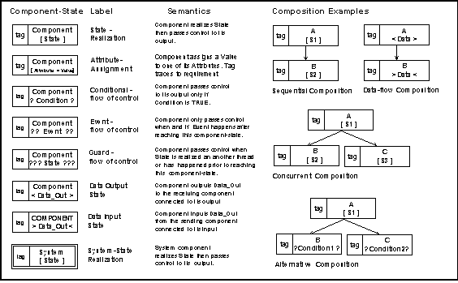
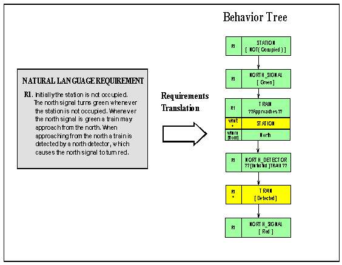

Behavior Trees is a graphical representation, which has been given a formal semantics based on a new process algebra, allows us to formalize and integrate all the fragments of behavior expressed in individual requirements.
Behavior Trees are a cognitive compromise between pictures and words. They take what is described in words and give it a structure that is designed to aid the efficiency of comprehension and clarify the original intent. Behavior Trees do not necessarily say more than natural language, or mathematics or other diagrammatic forms. Instead, they are an alternative that accurately and unambiguously describes what we say in sequential natural language. Behavior Trees use an integrated (non-sequential) structure that is designed specifically to reduce the burden on our short-term memory in understanding information. Behavior Trees are normally constructed by rigorous word-by-word translation from natural language.
Several things make behavior trees interesting: they amplify our ability to deal with complexity; individual behavior trees may integrated; and, integrated behavior trees have important emergent properties. The notation is expressive, simple, uniform and easy to use. Behavior Trees can model the behavior, composition, structure and relations needed to accurately capture the information in such diverse applications as software systems, legal contracts, standards, business processes, medical diseases, and genetic circuits. Behavior Trees are a cognitive compromise between pictures and words. They take what is described in words and give it a structure that aids the efficiency of comprehension and clarifies the original intent. Behavior Trees are a cognitive compromise between pictures and words. They take what is described in words and give it a structure that aids the efficiency of comprehension and clarifies the original intent. Behavior Trees are a cognitive compromise between pictures and words. They take what is described in words and give it a structure that aids the efficiency of comprehension and clarifies the original intent. Behavior Trees are a cognitive compromise between pictures and words. They take what is described in words and give it a structure that aids the efficiency of comprehension and clarifies the original intent.
The Behavior Tree here captures the fragment of behavior: “When a car arrives, if the gate is open the car may proceed, otherwise if the gate is closed, when and if the driver presses the button the gate will open and then the car may proceed”. Each tagged rectangle refers to a component (or entity or person) in a state. The ?? … ?? parenthesis for a state refers to an event, the ? … ? parenthesis refers to a condition/decision associated with a component and a state parenthesised by [ … ] refers to the named component realizing the parenthesized state. The event corresponding to the car being at the entrance is the root of the behavior tree. The translated behavior tree captures all and only the behavior expressed in the natural language description. The goal always is to achieve repeatability when different people translate the same information to Behavior Trees. We do this by not altering the behavior vocabulary of the original text.
Behavior Trees represent, in a formal graphical form, natural language descriptions of behavior of people, organizations, “things” and systems. Wherever there is behavior, there is something that is behaving – hence the component-state representation. Behavior involves events, conditions/decisions, and actions that lead to the realisation of states by components or entities. Translation of behavior to a behavior tree and the subsequent integration of behavior trees helps us uncover problems with original textual descriptions. What is equally important is that Behavior Trees amplify our ability to deal with complexity. They do this by providing contextually integrated descriptions of behavior.
Definition: A Behavior Tree is a formal, tree-like graphical form that represents behavior of individual or networks of entities which realize or change states, make decisions, respond-to/cause events, and interact by exchanging information and/or passing control.
The Behavior Tree Notation captures in a simple tree-like form of composed component-states what usually needs to be expressed in a mix of other notations. Behavior is expressed in terms of components realizing states, augmented by the logic and graphic forms of conventions found in programming languages to support actions, composition, events, control-flow, data-flow, and threads. Behavior trees accurately capture behavior expressed in the natural language representation of functional requirements. They strictly use the vocabulary of the natural language requirements but employ graphical forms for behavior composition in order to eliminate risk of ambiguity. By doing this they provide a direct and clearly traceable relationship between what is expressed in the natural language representation and its formal specification.
The core elements of the Behavior Tree Notation are given below in the figure below. A foundation of the notation is that behavior is always associated with some component. Component-states which represent nodes of behavior are composed sequentially and concurrently to construct a behavior tree that represents behavior expressed in natural language requirements.

A Behavior Tree specifies state changes in components, how data is passed between components and how threads interact. There are constructs for setting and testing states of components as well as mechanisms for inter-process communication that include message passing (events), shared variable blocking and synchronization. A low-level process algebra with an operational semantics, BTPA has been defined together with a means for mechanical translation of Behavior Trees into BTPA. This means Behavior Trees have a precise semantics that supports simulation and formal verification by model-checking. A detailed treatment of the formal semantics of Behavior Trees as well as it use for simulation, model-checking, and failure modes and effects analysis is given elsewhere.
In practice, when translating functional requirements into behavior trees we often find that there is a lot of behavior that is either missing or is only implied by a requirement. We mark implied behavior with a “+” in the tag (and/or the colour yellow if colour can be shown) – we have done this the station in node three, Fig. [xx]. Behavior that is missing is marked with a “-“ in the tag (and/or the colour red). Explicit behavior in the original requirement that is translated and captured in the behavior tree has no “+/-“ marking, and the colour green is used. These conventions maximize traceability to original requirements. The Green-Yellow-Red traffic-light metaphor is intended to indicate the need for caution (yellow) and danger (red) and to draw attention to deficiencies in the original requirements. Subsequent change to a working system requirements/design is marked by a “++” in the tag and/or the colour blue, while parts that are delete are marked “- - “ in the tag and/or the colour grey. These conventions are particularly useful when discussing/validating requirements and designs with stakeholders. It provides a clear record of the evolution of, and deficiencies in the original system. With the fourth sentence, which is again a compound sentence, detection of the train is again an event – we cannot predict exactly when or even if it will happen. In this case we have chosen to add that the train ends up being in a “detected” state – this is only implied; it is not stated in the requirements. We have documented it accordingly with a “+” and yellow. The word “causes” in the second half of the sentence tells us that the behavior of the north signal happens after the train is detected. With the second half of this sentence translated and composed into the tree we have the complete translation to a Behavior Tree (BT) for requirement R1 shown in fig xx. The requirements tags, R1, etc are always included in the BT to guarantee traceability to the original requirements. We call a behavior tree resulting from translation of a requirement a “requirements behavior tree (RBT)”.

Figure
3. Translation of a requirement (RI) to a requirements behaviour tree
(RBT).
Society relies heavily on the use of natural language to capture, describe and communicate information. People’s proficiency with natural language ensures that this is a practical way to operate. However, whenever we have to deal with large amounts of information and/or copious amounts of detail, it is highly likely that there will be problems of ambiguity, inconsistency, incompleteness and redundancy in what is expressed. These problems can have serious consequences where accuracy of intention and accuracy of communication is at a premium. These problems with natural language have been recognised for a long time. And, as a result, practitioners in many disciplines have sought to design other notations, of a mathematical, logical, graphical or composite form, with a well-defined (and hopefully a formal) semantics. These notations have the intent to overcome the problems with natural language. In some application areas this strategy has been successful, while in others, like software engineering, where things are complex, there are still significant problems.
This brings us to the question, “why use Behavior Trees”. We provide six main reasons below. It is these six properties that distinguish and give Behavior Trees an advantage over other currently available composite and/or individual notations.